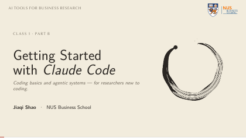
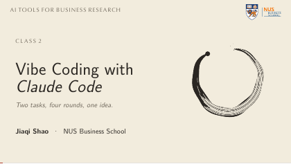
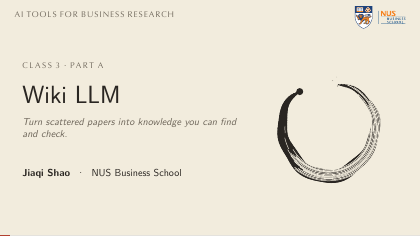
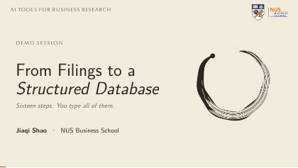

Biz PhD Workshop · 4 & 5 August 2026 · Concept and keyboard
AI Tools for Business Research
Two days in which every session paired a short conceptual opening with work you did on your own laptop — and you left with a research companion that keeps learning from what you do.
4 & 5 August 2026 · 09:00–17:00 SGT · Biz 2, Level 5, Seminar Room 05-11 · Five sessions · Twelve teaching hours
> Pull every mention of tariff exposure out of these twelve 10-Ks,
tag each one by business segment, and give me a table I can merge
on GVKEY. Show me the plan before you write anything.
Introduction
Artificial intelligence is opening the door to a new era of business scholarship: one in which every researcher can be accompanied by a personalised team of intelligent agents.
Organised by the Dean's PhD and Research Office, this intensive two-day course was designed to help NUS Business School researchers step confidently into this new world. Through immersive, hands-on training, participants built their own AI research ecosystem and saw how agentic AI can transform every stage of the research pipeline.
Rather than mastering a single tool, participants learned how to cultivate an evolving research companion that learns from their daily work and grows alongside the rapidly advancing frontier of agentic AI.
What you can do afterwards
Four capabilities, each practised on your own machine during the two days.
- Operate Run an agentic coding assistant fluently — install it, manage permissions and cost, and steer it with plan mode and prompts that actually land.
- Apply Put it on real research chores: exploratory analysis, building a dataset from raw sources such as SEC EDGAR, debugging, and refactoring.
- Personalise Shape the setup around your own work with custom skills, subagents, and MCP integrations — and wire the agent into a Markdown knowledge base that compounds.
- Evaluate Use LLMs across the research pipeline while reasoning about bias, reproducibility, and research ethics — and know which failure each safeguard is for.
Who it was for
Open to graduate researchers in any business discipline — Accounting, Finance, Marketing, Management, Operations, Information Systems, Economics.
No prior programming experience was required. Session 1B is a from-zero primer: basic coding literacy, an intuition-level introduction to how these models work, and a guided check of your environment. Anyone already working in Python, R, or Stata treated that session as a setup-verification pass.
What we did assume
- Comfort working with research data — spreadsheets, CSVs, regressions.
- No machine-learning theory.
- A laptop you can install software on, and two accounts: a Claude Code subscription (or API access) and a GitHub account.
- A free Obsidian install for Session 3.
Working through it on your own? Start with the setup guide — 30 to 45 minutes — then take the five decks in order from the materials page. Each one is the deck used live in the room, speaker notes and all.
The five sessions
Twelve teaching hours across two days. Each session pairs a short conceptual opening with a practice you run yourself. The same field-experiment paper runs through Sessions 1B, 2, and 3, so the work compounds rather than restarting.
Running order is as delivered. Durations are the teaching blocks; breaks and meals sat between them.
Day one — Tuesday 4 August
-
1A · From ledgers to agents
The long automation of economic research — a human history of delegated judgment.
The arc from hand-written code, through the machine-learning turn, to programming in natural language. Then where the models fail: bias, hallucination, overconfidence. Fabricated citations, non-reproducibility, data leakage, and the AI-disclosure policies now in force at AEA, Elsevier, and Management Science.
-
Break
-
1B · Getting started with Claude Code
Coding basics and agentic systems — for researchers new to coding.
Environment verification, then the minimum coding literacy that matters: variables, loops, reading a CSV, running a regression script — enough to read and verify what an agent writes for you. What an agentic system is, how it differs from a chat assistant, and how to keep an eye on permissions and cost.

Hands on · Practice A — set up, then understand the paper
-
Lunch
-
2 · Vibe coding with Claude Code
Two tasks, four rounds, one idea.
Three doors into the same model — chat, cowork, and a full coding session — which differ only in what the model may touch; the rule is to open the smallest door that fits. Then the harness: tools, context, guardrails, the loop, and who verifies. Two tasks carry the session — turn a paper into slides, then critique the slides — through plan mode,
@context, and the write–test–debug–refactor cycle. The idea underneath: the harness is the product.
Slides — 112 pages, 995 KB PDF
Hands on · Practice B — paper to talk, then to referee
Day two — Wednesday 5 August
-
3 · Wiki LLM
Turn scattered papers into knowledge you can find and check.
Why every hand-kept research wiki dies — not the reading, not the thinking, the bookkeeping. From Bush's Memex to a plain-Markdown vault you own and can version with Git; wiring the agent into it so it reads, searches, and updates notes in place; and using the vault as ground truth so an answer always names the table it came from. Built in three layers, shown as finished files and the commands that made them.

Hands on · Practice C — make the paper compound
-
Break and lunch
-
4 · From filings to a structured database
Sixteen steps. You type all of them.
One question, answered end to end: did firms increase tariff-related language in their 10-K risk factors after the 2025 tariff escalation? Twenty-five trade-exposed firms across four fiscal years — a hundred filings. Four stages: scrape, parse, structure, analyse, with three checkpoints where the whole room stops and syncs so nobody moves on alone. You write your prediction down first, and you leave with a database on your own laptop that you can query.

Hands on · the whole session is the build
How the workshop ran
A short course, not a for-credit course: no grades, no problem-set marks, no final project. What you got out of it was proportional to what you built during and between the sessions.
- Laptops open on both days, following along live.
- Everyone arrived with the setup already done, so no hour was lost to installing software.
- Participants brought a piece of their own data, or one research chore they wanted automated. The practices work far better on a problem you actually care about.
- Leaning on the assistant heavily is the entire point — while learning to verify what it hands back.
Speakers
Speaker
Ms Shao Jiaqi
NUS Business School · Department of Accounting
A fourth-year PhD student. She presented her research on prediction markets.
Speaker
Dr Shirley Jiexuan Wang
Nankai University · Assistant Professor
An alumna of the NUS Business PhD in Accounting, Class of 2022. Her research explores the intersection of big data, emerging technologies, and information in financial markets.
Coordinators — Professor Tien Foo Sing and Professor Lin Yupeng. Organised by the Dean's PhD and Research Office.
What participants said
From an anonymised written evaluation submitted after the pilot.
“Highly pragmatic, well-structured, and deeply relevant to the actual challenges I face in my daily academic workflows.”
A PhD participant, NUS Business School
“The course systematically deconstructed AI jargon, risks, and the true capabilities and limitations of these tools. It helped connect isolated pieces of information into a cohesive framework, allowing me to safely integrate AI into research.”
A PhD participant, NUS Business School
“Learning how to visualize code and markdown files within a single window eliminates the friction of constantly jumping between multiple applications, which will significantly streamline my research process.”
A PhD participant, NUS Business School
Details
- Dates
- Tuesday 4 and Wednesday 5 August 2026
- Time
- 09:00 – 17:00 SGT, both days
- Venue
- NUS Business School, Biz 2 Building, Level 5, Seminar Room 05-11
- Format
- In person, hands on, laptops open. Five sessions, twelve teaching hours.
- Organiser
- Dean's PhD and Research Office, NUS Business School
- Materials
- Slides, practice kits, and the setup guide
- Questions
- jiaqishao@u.nus.edu